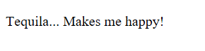

State of accessibility
State of the Browser, London September 2017
Browser accessibility support


Internet Explorer 56%
Safari 73%
Chrome 81%
Firefox 91%
Edge 100%
HTML5 accessibility support
http://html5accessibility.com/

HTML checkbox
<input type="checkbox" id="bold">
<label for="bold">Bold</label>
Rendered view

Accessibility tree

The details and summary elements
<details>
<summary>Tequila...</summary>
Makes me happy!
</details>
Edge: not implemented

Accessibility information
- Role
- button
- State
- focusable
- focused
- expandable
- collapsed
Accessibility APIs
- Windows
- UI Automation (UIA)
- MS Active Accessibility (MSAA)
- IAccessible2 (IA2)
- Mac OS
- OSX Accessibility Protocol (AXAPI)
- Linux
- Accessibility Toolkit (ATK)
- AT Service Provider Interface (AT-SPI)
Jaws and NVDA
Create a virtual copy of the browser content


Screen reader demo: headings
Accessibility mechanics
- Browser parses the HTML, then builds the DOM and a11y tree
- Screen reader (on Windows) queries the a11y tree, then builds the virtual buffer
- Browser responds to changes in the DOM, then updates the a11y tree
- Screen reader listens for changes in the a11y tree, then updates the virtual buffer
Browser processes
Change the way screen readers interact with the browser
Internet Explorer + MSAA
Allows screen readers to make accessibility API calls within the same process
Edge + UIA
Prevents screen readers from making accessibility API calls within the same process
Chrome + UIA2
Passes the accessibility tree from the content process back to the UI process, where screen readers can query it
Narrator and VoiceOver
Do not create a virtual copy of the browser content
 Narrator
Narrator
 VoiceOver
VoiceOver
AOM phases
- Modify the semantic properties of the accessibility node associated with a DOM node;
- Directly respond to events or actions from AT;
- Create virtual accessibility nodes (not associated with DOM nodes);
- Programmatically explore the accessibility tree, and access the computed properties of accessibility nodes.
AOM Phase 1
Has landed in Chrome Canary behind the flag:
--enable-blink-features=AccessibilityObjectModel
HTML code
<span id="button">Tequila!</span>
<div id="container">
Makes me happy!
</div>
Create DOM node references
var button = document.getElementById('button');
var container = document.getElementById('container');
Modify DOM node properties
button.setAttribute('tabindex', 0);
container.setAttribute('hidden', true);
Modify accessible node properties
button.accessibleNode.role = "button";
button.accessibleNode.expanded = false;
Create AccessibleNodeList
var content = new AccessibleNodeList();
content.add(container.accessibleNode);
Create the function
function disclose(event) {
if(container.getAttribute('hidden')) {
button.accessibleNode.expanded = true;
button.accessibleNode.controls = content;
container.removeAttribute('hidden');
}
else {
button.accessibleNode.expanded = false;
button.accessibleNode.controls = null;
container.setAttribute('hidden', true);
}
}
Add event listeners
button.addEventListener('click', disclose, false);
button.addEventListener('keydown', function(event) {
if (event.keyCode == 13 || event.keyCode ==32) {
disclose();
}
});
Screen reader demo: AOM disclosure